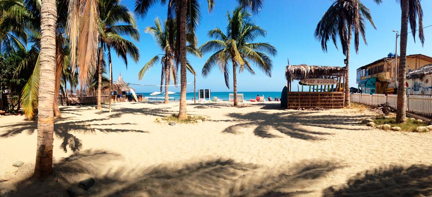
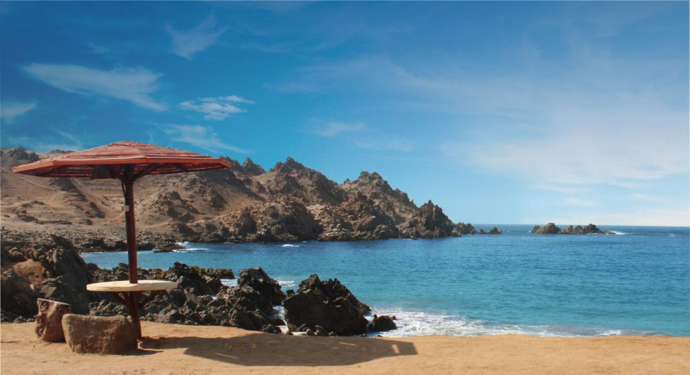
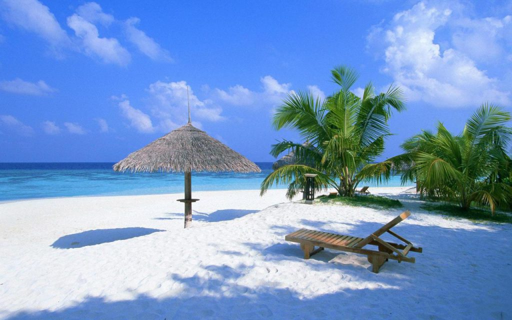
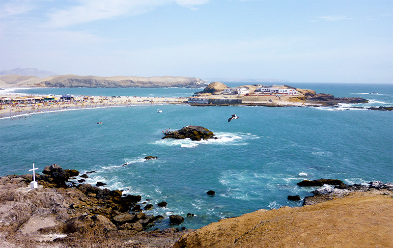

Máncora
Surfear todo el día, comer el ceviche más fresco de la zona y disfrutar de cielos despejados todo el año. Máncora es un paraíso playero y una de las playas más conocidas del norte de Perú. En Máncora todo es celebración, y eso se nota en su vibrante vida nocturna que no descansa hasta el amanecer. Desde los resorts más exclusivos hasta hostales para mochileros empedernidos, Máncora recibe a todo viajero que tenga sus olas onduladas y diversión en mente. A solo 4 km al sur de Máncora está la playa Las Pocitas, conocida por lugareños como Máncora Chico, un lugar perfecto para ver el atardecer en las piscinas naturales que se forman entre las rocas.

Puerto Inka
Puerto Inka goza de la belleza natural de hermosos acantilados y singulares formaciones rocosas naturales. Se trata de una bahía en Arequipa, donde el mar es tranquilo y el agua transparente. Se llama así porque fue una de las playas más importantes para los Incas. Hasta aquí llegaba uno de los brazos del Camino del Inca, el mismo que llega a la ciudadela de Machu Picchu, y todavía se pueden ver restos arqueológicos así como los antiguos corrales para las llamas.

Punta Sal
Punta Sal es una de esas playas que la misma naturaleza se encarga de resguardar. La cadena de cerros alrededor la protegen del viento y el clima árido la mantiene sin lluvias y con un eterno sol radiante. Sus 6.5km de longitud son acariciadas por aguas cálidas y calmas que contrastan de manera maravillosa con los verdes algarrobos y pastizales. Una playa paradisíaca por donde se la mire.

Playa Trujillo
El balneario de Tuquillo se encuentra a 7 kilómetros al norte de la ciudad de Huarmey, siguiendo la ruta de la Panamericana Norte. Esta playa es reconocida por sus aguas tranquilas de azul intenso y arena fina. Además posee islotes a solo cincuenta metros de la orilla que son hábitats naturales para aves guaneras como el piquero o el guanay. El balneario cuenta además con otras 3 playas hacia el sur de Tuquillo, la Maracaná, Antivito y la Posita, esta última es perfecta para los más pequeños.